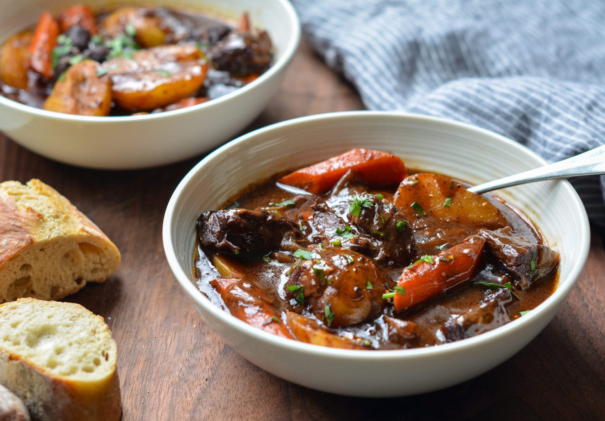

This easy slow cooker beef stew recipe made with
potatoes, carrots, celery, broth, herbs, and spices is hearty and comforting.
You won't be slow to say 'yum'!

Preparation time: 20min
Cook time : 2h
Ingredients list
These are the ingredients you'll need to make this top-rated beef stew recipe:
- Stew meat:This recipe starts with two pounds of beef stew meat, cut into 1-inch pieces.
- Flour:ll-purpose flour thickens the broth, ensuring a hearty stew.
- Seasonings:This beef stew is seasoned with salt, pepper, Worcestershire sauce, paprika, garlic, and a bay leaf.
- Broth:Use store-bought or homemade beef broth.
- Vegetables:You'll need carrots, potatoes, onions, and celery.
How to Make Beef Stew In the Slow Cooker
- Combine ingredients:Place the beef in the slow cooker, then toss with flour, salt, and pepper.
Add the broth, vegetables, Worcestershire sauce, paprika, garlic, and bay leaf. Stir to combine.
- Set slow cooker: Cover the Crock-Pot and cook on Low for 8 to 12 hours or on High for 4 to 6 hours.
Return to top
Return to main page